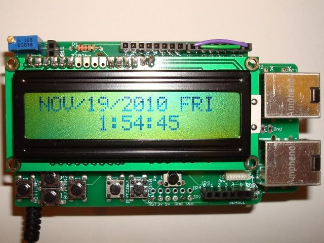
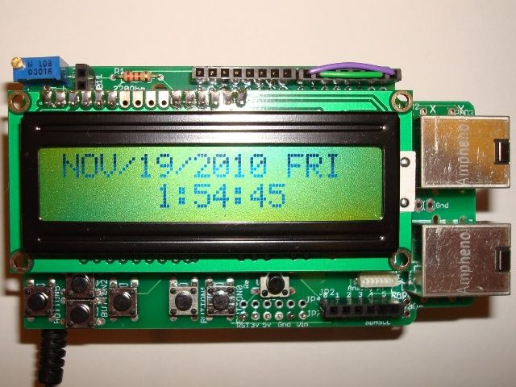

Arduino Clock


-
Description
I want to build an alarm clock from scratch. I want to use the Arduino Uno microcontroller, ideally. It will also use an LCD display to show the time, date, and weekday. It will use 5 pushbuttons and one switch for setting and interacting with the interface. A few LED's will be used to show off some style and make it more interactive. I think this project will teach me a lot about programming in Arduino C++ and wiring different components. I love learning about electronics and expanding my background and skills. Please help me achieve my goals of becoming an electrical engineer! Thanks for your time and consideration! -
What I Need
- Arduino Uno
- LCD
- LEDs (any color)
- Small pushbuttons
- Small SPST switch
- Soldering supplies
-
Why I Need It
Being only 14, I don't have a job, car, or much money. Also, my parents don't have the spare money to spend on anything other than necessities. I want to learn, but sometimes, it takes an investment from someone to spark learning in areas such as technology. -
Location